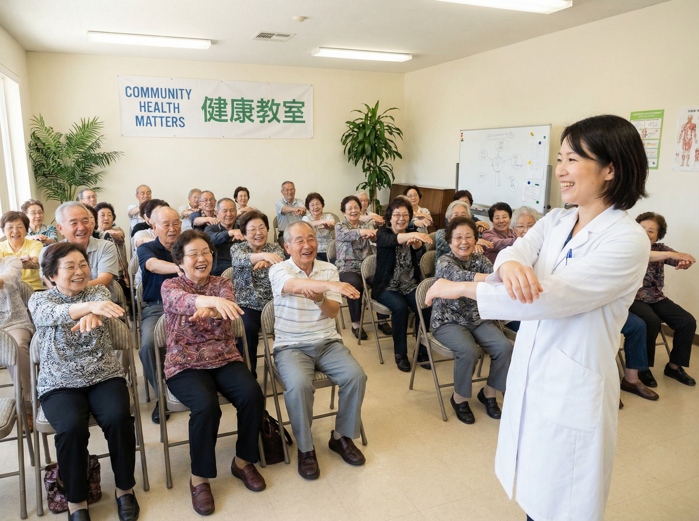

私たちの3つの柱
AI技術と医療専門家の力を掛け合わせ、地域社会の健康を守る。
日本介護予防推進協会は、3つの柱で活動を展開しています。
AI活用による業務効率化
最新のAI技術を活用し、訪問看護記録の作成や書類作成など、医療・介護従事者の事務作業を大幅に効率化します。これまで数時間かかっていた業務をAIがサポートし、専門家が本来の医療・ケアに集中できる環境を創ります。
- 訪問看護記録のAI自動作成支援
- 介護施設の書類業務効率化
- AI導入コンサルティング
プロフェッショナルネットワーク
AIによって事務作業から解放された専門家たちの「隙間時間」を活用し、看護師・薬剤師・栄養士・理学療法士・鍼灸師・歯科衛生士・ケアマネジャー・介護福祉士など多様な分野の国家資格者を集め、AIを武器にした強力なネットワークを構築します。
- 専門家同士のナレッジシェア
- 分野横断的な連携支援
- 専門家マッチングプラットフォーム

地域社会への予防医療の教育と啓発活動
集まったプロフェッショナルたちがそれぞれの専門分野の知見を活かし、地域住民に向けた健康セミナーや個別相談会を実施。予防医療の重要性を広く伝え、介護が必要になる前の段階で適切な支援を届けます。
- 地域健康セミナー・講演会の開催
- 個別相談・健康相談会
- 介護予防教室の運営
対象者別の活動紹介
それぞれの立場に合わせた支援・連携メニューをご用意しています。
NPO支援者向け
NPOを支援したい個人・団体の方へ。寄付・ボランティア・プロボノなど、さまざまな関わり方をご紹介します。
詳しく見るNPO向け
NPO法人・市民活動団体の方へ。運営支援やネットワーキングの機会を提供しています。
詳しく見る企業向け
企業・事業者の方へ。CSR・社会貢献活動の連携や、介護予防分野でのビジネス協力についてご案内します。
詳しく見る行政向け
行政・自治体の方へ。地域の介護予防施策との連携や政策提言に関する情報をお届けします。
詳しく見る研究者向け
研究者・学術機関の方へ。共同研究やデータ提供など、学術分野での連携についてご紹介します。
詳しく見るメディア向け
報道関係者の方へ。取材・プレスリリース・資料請求など、メディア対応についてご案内します。
詳しく見る実績紹介
機能訓練特化型デイサービスの全国普及
私たちは、日本初の「午前・午後2単位制の機能訓練特化型デイサービス」を大阪府寝屋川市で立ち上げました。
この革新的なモデルは全国から大きな注目を集め、多くの見学者が殺到。現在では全国標準のスタイルとして広く普及しています。
立ち上げ当初から蓄積してきたノウハウを活かし、同様のデイサービスを開設したい事業者の方々に向けた立ち上げアドバイスやコンサルティングも実施しています。
この経験と実績が、現在の3つの柱の活動を支える基盤となっています。